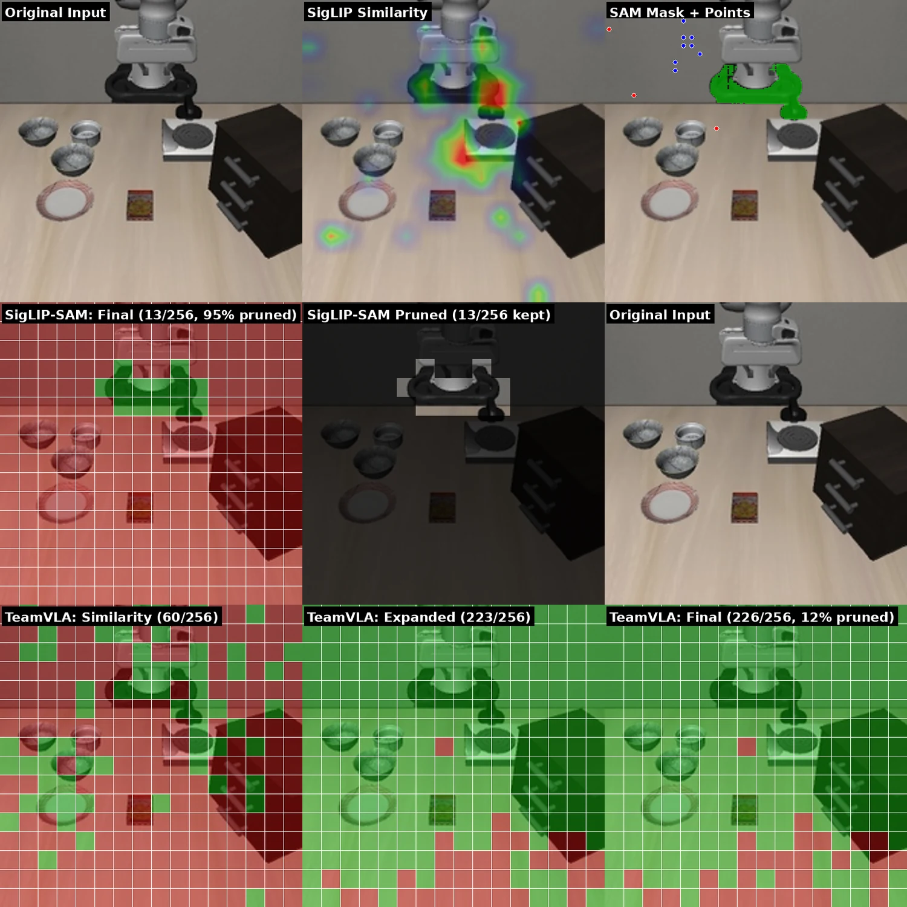

Abstract
Vision-Language-Action models process hundreds of visual tokens at every decision step, increasing latency while allowing irrelevant context to distract action prediction under distribution shift. T3R addresses two complementary forms of redundancy: spatially irrelevant visual tokens and misallocated attention over the retained sequence.
T3R is fully training-free. Its first stage uses instruction-conditioned segmentation to prune visual patches before the decoder. Its second stage uses Integrated Gradients to identify instruction-salient tokens and applies an additive attention bias in the middle decoder layers. Across OpenVLA-OFT, CogACT, and π0.5, T3R improves the accuracy-efficiency frontier while preserving the underlying model weights.
Method
Remove distraction, then repair attention.
The stages target different bottlenecks and require no additional training or model-weight updates.
Segmentation-guided pruning
POS-weighted SigLIP similarity localizes instruction-relevant regions. Spatially clustered point prompts and DINOv2 features guide EfficientTAM, and only patches intersecting the resulting mask enter the language-model decoder.
- Operates before every decoder layer
- Adapts the retained budget to scene difficulty
- Removes irrelevant context as well as compute
Saliency-guided attention biasing
Integrated Gradients identifies instruction tokens that are salient to the predicted action. A lightweight additive bias guides action-token queries toward those tokens in decoder layers 8–23.
- Uses five effective IG steps
- Targets the model's middle decoder layers
- Recovers six points over pruning alone


Results
High token reduction without the usual accuracy collapse.
At the same 85% reduction on LIBERO-Spatial, T3R exceeds ADP by 30 percentage points and FastV by 82 points.
OpenVLA-OFT on LIBERO-Spatial
Success rate (%) and runtime per control step
| Method | Scene-token reduction | Success | Runtime |
|---|---|---|---|
| Baseline | 0% | 97% | 107.5 ms |
| TeamVLA | ~15% | 94% | 102.6 ms |
| FastV | 85% | 14% | — |
| ADP | 85% | 66% | — |
| T3R (ours) | 85% | 96% | 92.5 ms |
Runtime is measured on one NVIDIA L40S at 224 px. Including the fixed 7.8 ms refinement overhead, the end-to-end speedup is 1.16× at this resolution and is projected to reach 2.47× at 768 px.


Cross-backbone evaluation
The benefit grows with visual redundancy.
T3R transfers without fine-tuning to CogACT and π0.5. Aggressive pruning has less headroom with one camera, but is especially effective when several views contain overlapping evidence.
CogACT · SIMPLER
Single-camera average success rate (%)
| Method | Keep ratio | Google Robot | WidowX / Bridge |
|---|---|---|---|
| Baseline | 100% | 73.2 | 10.4 |
| ADP | 75% / ~87% | 71.0 | 16.7 |
| FastV | ~60% | 73.3 | 15.6 |
| TeamVLA | 31.25% | 69.5 | 12.5 |
| T3R | 60% | 67.7 | 10.4 |
π0.5 · RoboTwin
Three cameras; unpruned baseline = 33.4%
| Tokens / camera | Keep | T3R | ADP | FastV | TeamVLA |
|---|---|---|---|---|---|
| 64 | 25% | 13.3 | 13.3 | 11.7 | 3.3 |
| 96 | 37.5% | 25.0 | 13.3 | 23.3 | 11.7 |
| 128 | 50% | 33.3 | 19.4 | 18.1 | 13.9 |
| 160 | 62.5% | 38.3 | 25.0 | 28.3 | 15.0 |
| 192 | 75% | 62.5 | 33.4 | 37.5 | 20.9 |
The π0.5 port uses norm-saliency selection while preserving original token positions; the OpenVLA-OFT attention-bias stage is not used for these reported results.
Visual explanations
Method and result walkthroughs.
These short videos animate figures from the paper. They explain the pipeline and measured trends; they are not robot-rollout footage.

Scope and limitations
The experiments are simulation-based. Benefits are strongest in multi-camera settings, where views provide redundant evidence. Aggressive irreversible pruning can be less effective in single-camera or multi-phase tasks, and segmentation errors can remove necessary evidence. On LIBERO-Object, for example, T3R underperforms TeamVLA when similarity splits between a source object and a visually dominant destination.
Citation
Cite T3R
The paper button will link to arXiv after the camera-ready manuscript is approved and uploaded.
@inproceedings{hassan2027t3r,
title = {T3R: Training-Free Two-Stage Token
Refinement Towards Efficient and Robust
VLA Models},
author = {Hassan, Mohammed and Chen, Zhenyang and
Wang, Zheng and Zhu, Zhixin and Chen,
Tianlong and Lin, Yingyan and Li, Chaojian},
booktitle = {ASP-DAC},
year = {2027}
}